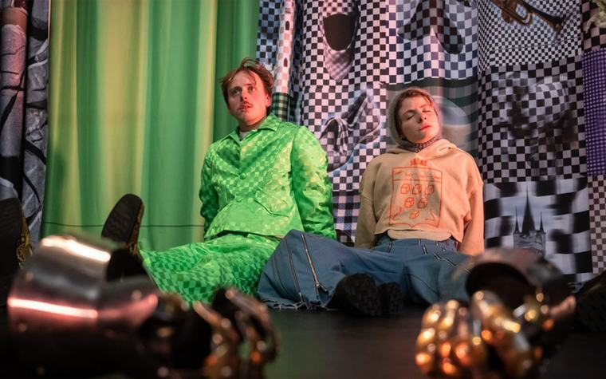
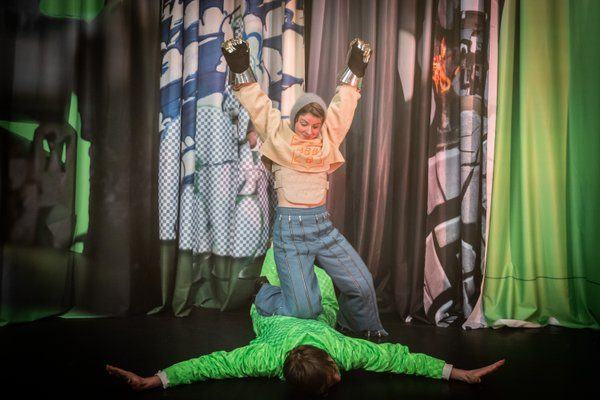
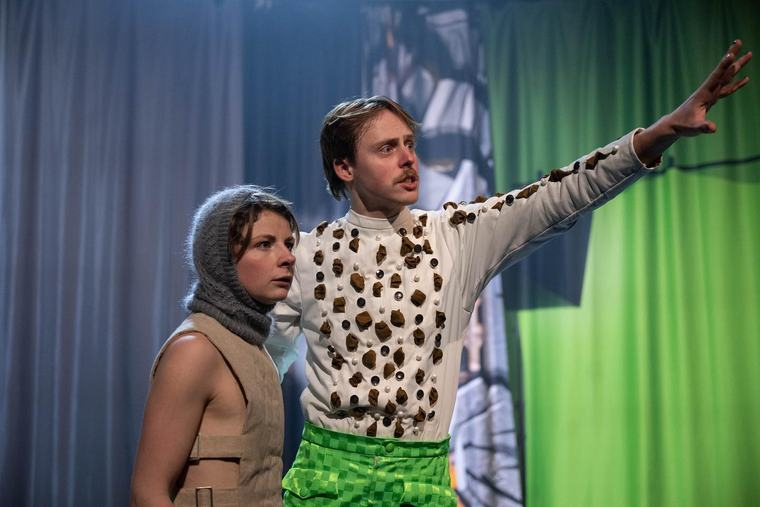
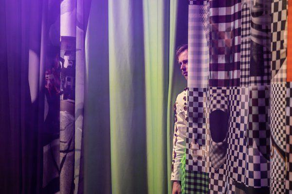
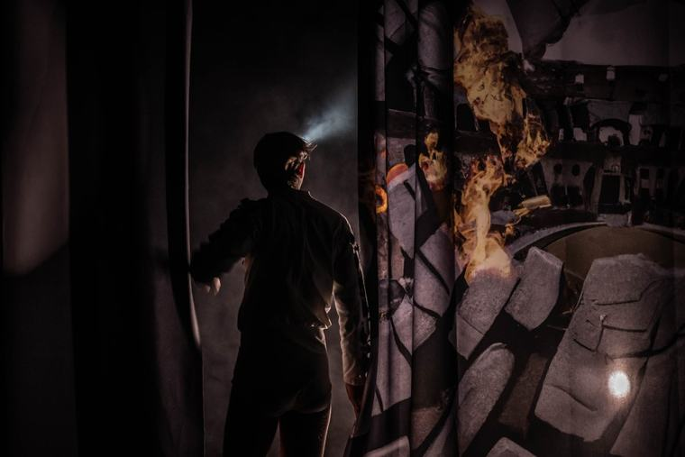

Hamlet versus Don Quixote

A duel between two (anti)heroes. We doubt the world, ourselves, good and evil, while forests burn, sea levels rise and inequality grows. What kind of heroes does this age need?
Evalinde Lammers and David Westera search for the Hamlet and the Don Quixote in themselves: between head and heart, between egoism and idealism. To Hamlet or to Don Quixote, that is the question.
“Een cadeautje vol energie en curieuze gebeurtenissen.”
“Een opmerkelijke mix van literatuur, levensvraagstukken, fantasie, taalvondsten, Disney-karaoke, actie-reactie en sokkenspel.”

Credits
- concept
- Antiklimax
- direction & text
- Koen van Seuren
- performers & text
- David Westera, Evalinde Lammers
- dramaturgy
- Judith Blankenberg
- design
- Caz Egelie
- lighting design
- Bogi Bakker
- co-production
- Grand Theatre Groningen
- photography
- Niels “Knelis” Meijer
Performances
- 24 Feb 2023 premiere, Grand Theatre Groningen
- 2023 tour: Festival Cement Den Bosch, Het Nationale Theater The Hague, Theater Kikker Utrecht, Theater Walhalla Rotterdam, De Sloot Amsterdam





photo: Niels “Knelis” Meijer